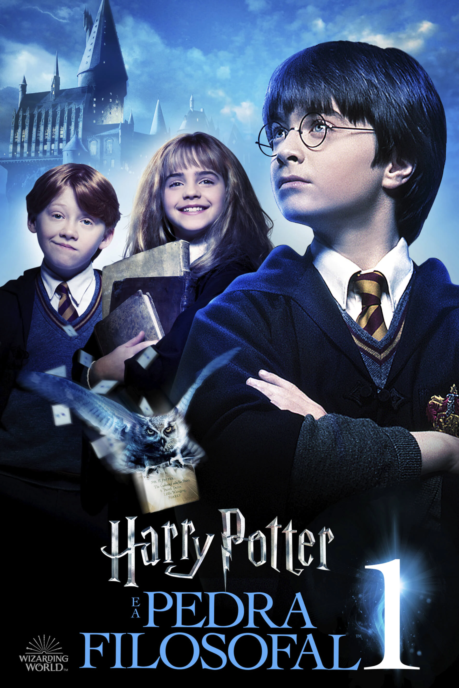

HARRY POTTER E A PEDRA FILOSOFAL:
Onde tudo começou! Reviva o momento em que Harry descobre que é um bruxo. 100% nostalgia.

HARRY POTTER E A CÂMARA SECRETA:
Um dos episódios mais sombrios da saga, onde pessoas começam a ficar misteriosamente petrificadas em Hogwarts.

HARRY POTTER E O PRISIONEIRO DE AZKABAN:
As crianças cresceram! A história de Harry e seus amigos muda quando eles percebem que a justiça nem sempre é o que parece.

HARRY POTTER E O CÁLICE DE FOGO:
A Copa Mundial de Quadribol, o Torneio Tribruxo e aquele final chocante são alguns dos elementos desta quarta parte.

HARRY POTTER E A ORDEM DA FÊNIX:
Você é o-quem-não-deveria-ser-nomeado? É hora de ver Harry convencer o mundo mágico sobre o retorno de Voldemort.

HARRY POTTER E O ENIGMA DO PRÍNCIPE:
Vamos erguer nossas varinhas ao céu para homenagear o maior bruxo de todos os tempos. Você sabe de quem estamos falando.

HARRY POTTER E AS RELÍQUIAS DA MORTE: PARTE 1:
O início do fim nos leva a uma jornada fora de Hogwarts para encontrar os itens que destruirão o Lorde das Trevas.